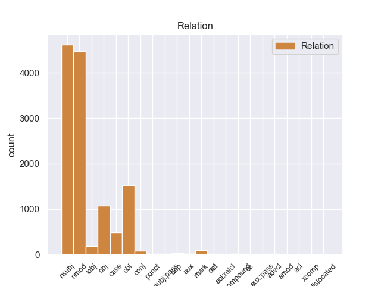
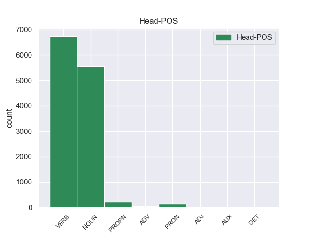
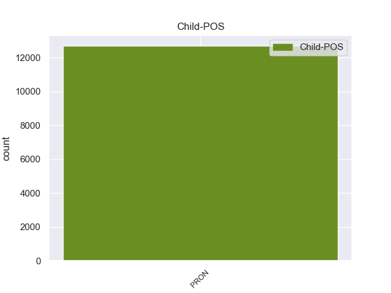

Distribution of features within this leaf



Agreement Rules sorted by frequency.
When the dependent token is None
1 दावोस _ _ _ _ 0 _ _ _
2 में _ _ _ _ 0 _ _ _
3 वर्ल्ड _ _ _ _ 0 _ _ _
4 इकोनॉमिक _ _ _ _ 0 _ _ _
5 फोरम _ _ _ _ 0 _ _ _
6 की _ _ _ _ 0 _ _ _
7 बैठक _ _ _ _ 0 _ _ _
8 के _ _ _ _ 0 _ _ _
9 दौरान _ _ _ _ 0 _ _ _
10 भारत _ _ _ _ 0 _ _ _
11 ने _ _ _ _ 0 _ _ _
12 जिस _ _ _ _ 0 _ _ _
13 जोरदार _ _ _ _ 0 _ _ _
14 तरीके _ _ _ _ 0 _ _ _
15 से _ _ _ _ 0 _ _ _
16 अपना _ _ _ _ 0 _ _ _
17 पक्ष _ _ _ _ 0 _ _ _
18 पेश _ _ _ _ 0 _ _ _
19 किया _ _ _ _ 0 _ _ _
20 और _ _ _ _ 0 _ _ _
21 पूरी _ _ _ _ 0 _ _ _
22 बैठक _ _ _ _ 0 _ _ _
23 में _ _ _ _ 0 _ _ _
24 छाया _ _ _ _ 0 _ _ _
25 रहा _ _ _ _ 0 _ _ _
26 , _ _ _ _ 0 _ _ _
27 उसने वह PRON PRP Case=Acc,Erg|Number=Sing|Person=3|PronType=Prs 36 nsubj _ ChunkId=NP9|ChunkType=head|Tam=ne|Translit=usane|Vib=ने
28 दुनिया _ _ _ _ 0 _ _ _
29 भर _ _ _ _ 0 _ _ _
30 के _ _ _ _ 0 _ _ _
31 लोगों _ _ _ _ 0 _ _ _
32 का _ _ _ _ 0 _ _ _
33 ध्यान _ _ _ _ 0 _ _ _
34 अपनी _ _ _ _ 0 _ _ _
35 ओर _ _ _ _ 0 _ _ _
36 खींचा खींच VERB VM Aspect=Perf|Gender=Masc|Number=Sing|Person=3|VerbForm=Part|Voice=Act 0 _ _ _
37 है _ _ _ _ 0 _ _ _
38 । _ _ _ _ 0 _ _ _
Disagree Examples:
1 हमें हम PRON PRP Case=Acc,Dat|Number=Plur|Person=1|PronType=Prs 13 nsubj _ _
2 स्थिति _ _ _ _ 0 _ _ _
3 के _ _ _ _ 0 _ _ _
4 बारे _ _ _ _ 0 _ _ _
5 में _ _ _ _ 0 _ _ _
6 पूरी _ _ _ _ 0 _ _ _
7 जानकारी _ _ _ _ 0 _ _ _
8 हासिल _ _ _ _ 0 _ _ _
9 करन _ _ _ _ 0 _ _ _
10 में _ _ _ _ 0 _ _ _
11 थोड़ा _ _ _ _ 0 _ _ _
12 समय _ _ _ _ 0 _ _ _
13 लगेगा लग VERB VM Gender=Masc|Mood=Ind|Number=Sing|Person=3|Tense=Fut|VerbForm=Fin|Voice=Act 0 _ _ _
14 । _ _ _ _ 0 _ _ _
1 इसी _ _ _ _ 0 _ _ _
2 मनुष्य _ _ _ _ 0 _ _ _
3 को _ _ _ _ 0 _ _ _
4 मैं मैं PRON PRP Case=Nom|Number=Sing|Person=1|PronType=Prs 7 nsubj _ _
5 बचपन _ _ _ _ 0 _ _ _
6 से _ _ _ _ 0 _ _ _
7 चाहते चाह VERB VM Aspect=Imp|Gender=Masc|Number=Plur|Person=3|VerbForm=Part|Voice=Act 0 _ _ _
8 आ _ _ _ _ 0 _ _ _
9 रहा _ _ _ _ 0 _ _ _
10 हूँ _ _ _ _ 0 _ _ _
11 . _ _ _ _ 0 _ _ _
12 साथ _ _ _ _ 0 _ _ _
13 ही _ _ _ _ 0 _ _ _
14 स्वयं _ _ _ _ 0 _ _ _
15 को _ _ _ _ 0 _ _ _
16 भी _ _ _ _ 0 _ _ _
17 मैंने _ _ _ _ 0 _ _ _
18 चाहाहै _ _ _ _ 0 _ _ _
19 . _ _ _ _ 0 _ _ _
20 इसलिये _ _ _ _ 0 _ _ _
21 उसके _ _ _ _ 0 _ _ _
22 यश _ _ _ _ 0 _ _ _
23 या _ _ _ _ 0 _ _ _
24 अपयश _ _ _ _ 0 _ _ _
25 की _ _ _ _ 0 _ _ _
26 कहानी _ _ _ _ 0 _ _ _
27 मैं _ _ _ _ 0 _ _ _
28 किसी _ _ _ _ 0 _ _ _
29 के _ _ _ _ 0 _ _ _
30 आगे _ _ _ _ 0 _ _ _
31 बखानते _ _ _ _ 0 _ _ _
32 वक्त _ _ _ _ 0 _ _ _
33 स्वयंके _ _ _ _ 0 _ _ _
34 भीतर _ _ _ _ 0 _ _ _
35 प्रेरणा _ _ _ _ 0 _ _ _
36 पाता _ _ _ _ 0 _ _ _
37 हूँ _ _ _ _ 0 _ _ _
38 . _ _ _ _ 0 _ _ _
39 मनुष्य _ _ _ _ 0 _ _ _
40 ही _ _ _ _ 0 _ _ _
41 तो _ _ _ _ 0 _ _ _
42 सुनना _ _ _ _ 0 _ _ _
43 चाहता _ _ _ _ 0 _ _ _
44 है _ _ _ _ 0 _ _ _
45 अन्य _ _ _ _ 0 _ _ _
46 मनुष्य _ _ _ _ 0 _ _ _
47 कीकहानी _ _ _ _ 0 _ _ _
48 ! _ _ _ _ 0 _ _ _
1 विश्व _ _ _ _ 0 _ _ _
2 बाज़ार _ _ _ _ 0 _ _ _
3 में _ _ _ _ 0 _ _ _
4 अनिश्चितता _ _ _ _ 0 _ _ _
5 का _ _ _ _ 0 _ _ _
6 माहौल _ _ _ _ 0 _ _ _
7 हो _ _ _ _ 0 _ _ _
8 , _ _ _ _ 0 _ _ _
9 खासकर _ _ _ _ 0 _ _ _
10 ऐसे _ _ _ _ 0 _ _ _
11 उत्पादों _ _ _ _ 0 _ _ _
12 के _ _ _ _ 0 _ _ _
13 मामले _ _ _ _ 0 _ _ _
14 में _ _ _ _ 0 _ _ _
15 जिनको _ _ _ _ 0 _ _ _
16 लेकर _ _ _ _ 0 _ _ _
17 हम हम PRON PRP Case=Nom|Number=Plur|Person=1|PronType=Prs 21 nsubj _ _
18 आयात _ _ _ _ 0 _ _ _
19 पर _ _ _ _ 0 _ _ _
20 निर्भर _ _ _ _ 0 _ _ _
21 करते कर VERB VM Aspect=Imp|Gender=Masc|Number=Sing|Person=3|Polite=Form|VerbForm=Part|Voice=Act 0 _ _ _
22 - _ _ _ _ 0 _ _ _
23 हैं _ _ _ _ 0 _ _ _
24 , _ _ _ _ 0 _ _ _
25 तो _ _ _ _ 0 _ _ _
26 इसका _ _ _ _ 0 _ _ _
27 असर _ _ _ _ 0 _ _ _
28 पड़ना _ _ _ _ 0 _ _ _
29 स्वभाविक _ _ _ _ 0 _ _ _
30 है _ _ _ _ 0 _ _ _
31 । _ _ _ _ 0 _ _ _
1 इशारा _ _ _ _ 0 _ _ _
2 साफ _ _ _ _ 0 _ _ _
3 था _ _ _ _ 0 _ _ _
4 , _ _ _ _ 0 _ _ _
5 इसलिए _ _ _ _ 0 _ _ _
6 सिंह _ _ _ _ 0 _ _ _
7 के _ _ _ _ 0 _ _ _
8 पश्चिमी _ _ _ _ 0 _ _ _
9 उत्तरप्रदेश _ _ _ _ 0 _ _ _
10 के _ _ _ _ 0 _ _ _
11 दौरे _ _ _ _ 0 _ _ _
12 केआखिरी _ _ _ _ 0 _ _ _
13 वक्त _ _ _ _ 0 _ _ _
14 पर _ _ _ _ 0 _ _ _
15 हाथ _ _ _ _ 0 _ _ _
16 खींच _ _ _ _ 0 _ _ _
17 लेने _ _ _ _ 0 _ _ _
18 के _ _ _ _ 0 _ _ _
19 बावजूद _ _ _ _ 0 _ _ _
20 अरूण _ _ _ _ 0 _ _ _
21 नेहरू _ _ _ _ 0 _ _ _
22 का _ _ _ _ 0 _ _ _
23 नाम _ _ _ _ 0 _ _ _
24 राजीव _ _ _ _ 0 _ _ _
25 की _ _ _ _ 0 _ _ _
26 हिटलिस्ट _ _ _ _ 0 _ _ _
27 में _ _ _ _ 0 _ _ _
28 आ _ _ _ _ 0 _ _ _
29 गया _ _ _ _ 0 _ _ _
30 . _ _ _ _ 0 _ _ _
31 स्वाभाविक _ _ _ _ 0 _ _ _
32 था _ _ _ _ 0 _ _ _
33 कि _ _ _ _ 0 _ _ _
34 अपने _ _ _ _ 0 _ _ _
35 निकाले _ _ _ _ 0 _ _ _
36 जाने _ _ _ _ 0 _ _ _
37 का _ _ _ _ 0 _ _ _
38 तीनों _ _ _ _ 0 _ _ _
39 नेता _ _ _ _ 0 _ _ _
40 विरोध _ _ _ _ 0 _ _ _
41 करते _ _ _ _ 0 _ _ _
42 . _ _ _ _ 0 _ _ _
43 अरूण _ _ _ _ 0 _ _ _
44 नेहरू _ _ _ _ 0 _ _ _
45 ने _ _ _ _ 0 _ _ _
46 प्रधानमंत्री _ _ _ _ 0 _ _ _
47 को _ _ _ _ 0 _ _ _
48 चुनौती _ _ _ _ 0 _ _ _
49 देने _ _ _ _ 0 _ _ _
50 के _ _ _ _ 0 _ _ _
51 लहजे _ _ _ _ 0 _ _ _
52 में _ _ _ _ 0 _ _ _
53 अपने _ _ _ _ 0 _ _ _
54 छोटे _ _ _ _ 0 _ _ _
55 से _ _ _ _ 0 _ _ _
56 वक्तव्य _ _ _ _ 0 _ _ _
57 में _ _ _ _ 0 _ _ _
58 कहा _ _ _ _ 0 _ _ _
59 कि _ _ _ _ 0 _ _ _
60 अगर _ _ _ _ 0 _ _ _
61 हाई _ _ _ _ 0 _ _ _
62 कमान _ _ _ _ 0 _ _ _
63 का _ _ _ _ 0 _ _ _
64 मकसद _ _ _ _ 0 _ _ _
65 डरा _ _ _ _ 0 _ _ _
66 धमका _ _ _ _ 0 _ _ _
67 कर _ _ _ _ 0 _ _ _
68 कांग्रेस _ _ _ _ 0 _ _ _
69 के _ _ _ _ 0 _ _ _
70 विधायकों _ _ _ _ 0 _ _ _
71 और _ _ _ _ 0 _ _ _
72 सांसदों _ _ _ _ 0 _ _ _
73 को _ _ _ _ 0 _ _ _
74 खुलकर _ _ _ _ 0 _ _ _
75 अपनी _ _ _ _ 0 _ _ _
76 राय _ _ _ _ 0 _ _ _
77 जाहिर _ _ _ _ 0 _ _ _
78 करने _ _ _ _ 0 _ _ _
79 से _ _ _ _ 0 _ _ _
80 रोकना _ _ _ _ 0 _ _ _
81 है _ _ _ _ 0 _ _ _
82 तो _ _ _ _ 0 _ _ _
83 उनकी _ _ _ _ 0 _ _ _
84 यह _ _ _ _ 0 _ _ _
85 मंशा _ _ _ _ 0 _ _ _
86 कभी _ _ _ _ 0 _ _ _
87 पूरी _ _ _ _ 0 _ _ _
88 नहीं _ _ _ _ 0 _ _ _
89 होने _ _ _ _ 0 _ _ _
90 दी _ _ _ _ 0 _ _ _
91 जायेगी _ _ _ _ 0 _ _ _
92 , _ _ _ _ 0 _ _ _
93 आरिफ _ _ _ _ 0 _ _ _
94 मोहम्मद _ _ _ _ 0 _ _ _
95 खां _ _ _ _ 0 _ _ _
96 ने _ _ _ _ 0 _ _ _
97 दावा _ _ _ _ 0 _ _ _
98 किया _ _ _ _ 0 _ _ _
99 कि _ _ _ _ 0 _ _ _
100 हम हम PRON PRP Case=Nom|Number=Plur|Person=1|PronType=Prs 110 nsubj _ _
101 तो _ _ _ _ 0 _ _ _
102 कांग्रेस _ _ _ _ 0 _ _ _
103 घोषणापत्र _ _ _ _ 0 _ _ _
104 में _ _ _ _ 0 _ _ _
105 दर्ज _ _ _ _ 0 _ _ _
106 नीतियों _ _ _ _ 0 _ _ _
107 का _ _ _ _ 0 _ _ _
108 ही _ _ _ _ 0 _ _ _
109 प्रचार _ _ _ _ 0 _ _ _
110 करते कर VERB VM Aspect=Imp|Gender=Masc|Number=Sing|Person=3|Polite=Form|VerbForm=Part|Voice=Act 0 _ _ _
111 रहे _ _ _ _ 0 _ _ _
112 हैं _ _ _ _ 0 _ _ _
113 . _ _ _ _ 0 _ _ _
114 इसलिए _ _ _ _ 0 _ _ _
115 पार्टी _ _ _ _ 0 _ _ _
116 विरोधी _ _ _ _ 0 _ _ _
117 गतिविधियों _ _ _ _ 0 _ _ _
118 का _ _ _ _ 0 _ _ _
119 आरोप _ _ _ _ 0 _ _ _
120 एकदम _ _ _ _ 0 _ _ _
121 निराधार _ _ _ _ 0 _ _ _
122 हैं _ _ _ _ 0 _ _ _
123 . _ _ _ _ 0 _ _ _
124 लेकिन _ _ _ _ 0 _ _ _
125 इस _ _ _ _ 0 _ _ _
126 कार्रवाई _ _ _ _ 0 _ _ _
127 से _ _ _ _ 0 _ _ _
128 हमारा _ _ _ _ 0 _ _ _
129 अभियान _ _ _ _ 0 _ _ _
130 रुकेगा _ _ _ _ 0 _ _ _
131 नहीं _ _ _ _ 0 _ _ _
132 . _ _ _ _ 0 _ _ _
133 सांप्रदायिकता _ _ _ _ 0 _ _ _
134 और _ _ _ _ 0 _ _ _
135 उच्च _ _ _ _ 0 _ _ _
136 पदों _ _ _ _ 0 _ _ _
137 पर _ _ _ _ 0 _ _ _
138 भ्रष्टाचार _ _ _ _ 0 _ _ _
139 के _ _ _ _ 0 _ _ _
140 खिलाफ _ _ _ _ 0 _ _ _
141 हमारी _ _ _ _ 0 _ _ _
142 लड़ाई _ _ _ _ 0 _ _ _
143 जारी _ _ _ _ 0 _ _ _
144 रहेगी _ _ _ _ 0 _ _ _
145 . _ _ _ _ 0 _ _ _
146 विद्याचरण _ _ _ _ 0 _ _ _
147 शुक्ल _ _ _ _ 0 _ _ _
148 बोले _ _ _ _ 0 _ _ _
149 , _ _ _ _ 0 _ _ _
150 हम _ _ _ _ 0 _ _ _
151 तो _ _ _ _ 0 _ _ _
152 भ्रष्ट _ _ _ _ 0 _ _ _
153 तत्वों _ _ _ _ 0 _ _ _
154 और _ _ _ _ 0 _ _ _
155 सांप्रदायिकतत्वों _ _ _ _ 0 _ _ _
156 के _ _ _ _ 0 _ _ _
157 खिलाफ _ _ _ _ 0 _ _ _
158 लड़ाई _ _ _ _ 0 _ _ _
159 लड़ _ _ _ _ 0 _ _ _
160 रहे _ _ _ _ 0 _ _ _
161 हैं _ _ _ _ 0 _ _ _
162 . _ _ _ _ 0 _ _ _
163 राजनैतिक _ _ _ _ 0 _ _ _
164 हलकों _ _ _ _ 0 _ _ _
165 में _ _ _ _ 0 _ _ _
166 यह _ _ _ _ 0 _ _ _
167 सवाल _ _ _ _ 0 _ _ _
168 चर्चा _ _ _ _ 0 _ _ _
169 का _ _ _ _ 0 _ _ _
170 विषय _ _ _ _ 0 _ _ _
171 है _ _ _ _ 0 _ _ _
172 कि _ _ _ _ 0 _ _ _
173 आखिर _ _ _ _ 0 _ _ _
174 राजीव _ _ _ _ 0 _ _ _
175 गांधी _ _ _ _ 0 _ _ _
176 ने _ _ _ _ 0 _ _ _
177 अपने _ _ _ _ 0 _ _ _
178 प्रमुख _ _ _ _ 0 _ _ _
179 प्रतिद्वंद्वी _ _ _ _ 0 _ _ _
180 विश्वनाथ _ _ _ _ 0 _ _ _
181 प्रताप _ _ _ _ 0 _ _ _
182 सिंह _ _ _ _ 0 _ _ _
183 को _ _ _ _ 0 _ _ _
184 छोड़कर _ _ _ _ 0 _ _ _
185 अन्य _ _ _ _ 0 _ _ _
186 तीन _ _ _ _ 0 _ _ _
187 विरोधी _ _ _ _ 0 _ _ _
188 नेताओँ _ _ _ _ 0 _ _ _
189 के _ _ _ _ 0 _ _ _
190 खिलाफ _ _ _ _ 0 _ _ _
191 कार्रवाई _ _ _ _ 0 _ _ _
192 क्यों _ _ _ _ 0 _ _ _
193 की _ _ _ _ 0 _ _ _
194 ? _ _ _ _ 0 _ _ _
1 इशारा _ _ _ _ 0 _ _ _
2 साफ _ _ _ _ 0 _ _ _
3 था _ _ _ _ 0 _ _ _
4 , _ _ _ _ 0 _ _ _
5 इसलिए _ _ _ _ 0 _ _ _
6 सिंह _ _ _ _ 0 _ _ _
7 के _ _ _ _ 0 _ _ _
8 पश्चिमी _ _ _ _ 0 _ _ _
9 उत्तरप्रदेश _ _ _ _ 0 _ _ _
10 के _ _ _ _ 0 _ _ _
11 दौरे _ _ _ _ 0 _ _ _
12 केआखिरी _ _ _ _ 0 _ _ _
13 वक्त _ _ _ _ 0 _ _ _
14 पर _ _ _ _ 0 _ _ _
15 हाथ _ _ _ _ 0 _ _ _
16 खींच _ _ _ _ 0 _ _ _
17 लेने _ _ _ _ 0 _ _ _
18 के _ _ _ _ 0 _ _ _
19 बावजूद _ _ _ _ 0 _ _ _
20 अरूण _ _ _ _ 0 _ _ _
21 नेहरू _ _ _ _ 0 _ _ _
22 का _ _ _ _ 0 _ _ _
23 नाम _ _ _ _ 0 _ _ _
24 राजीव _ _ _ _ 0 _ _ _
25 की _ _ _ _ 0 _ _ _
26 हिटलिस्ट _ _ _ _ 0 _ _ _
27 में _ _ _ _ 0 _ _ _
28 आ _ _ _ _ 0 _ _ _
29 गया _ _ _ _ 0 _ _ _
30 . _ _ _ _ 0 _ _ _
31 स्वाभाविक _ _ _ _ 0 _ _ _
32 था _ _ _ _ 0 _ _ _
33 कि _ _ _ _ 0 _ _ _
34 अपने _ _ _ _ 0 _ _ _
35 निकाले _ _ _ _ 0 _ _ _
36 जाने _ _ _ _ 0 _ _ _
37 का _ _ _ _ 0 _ _ _
38 तीनों _ _ _ _ 0 _ _ _
39 नेता _ _ _ _ 0 _ _ _
40 विरोध _ _ _ _ 0 _ _ _
41 करते _ _ _ _ 0 _ _ _
42 . _ _ _ _ 0 _ _ _
43 अरूण _ _ _ _ 0 _ _ _
44 नेहरू _ _ _ _ 0 _ _ _
45 ने _ _ _ _ 0 _ _ _
46 प्रधानमंत्री _ _ _ _ 0 _ _ _
47 को _ _ _ _ 0 _ _ _
48 चुनौती _ _ _ _ 0 _ _ _
49 देने _ _ _ _ 0 _ _ _
50 के _ _ _ _ 0 _ _ _
51 लहजे _ _ _ _ 0 _ _ _
52 में _ _ _ _ 0 _ _ _
53 अपने _ _ _ _ 0 _ _ _
54 छोटे _ _ _ _ 0 _ _ _
55 से _ _ _ _ 0 _ _ _
56 वक्तव्य _ _ _ _ 0 _ _ _
57 में _ _ _ _ 0 _ _ _
58 कहा _ _ _ _ 0 _ _ _
59 कि _ _ _ _ 0 _ _ _
60 अगर _ _ _ _ 0 _ _ _
61 हाई _ _ _ _ 0 _ _ _
62 कमान _ _ _ _ 0 _ _ _
63 का _ _ _ _ 0 _ _ _
64 मकसद _ _ _ _ 0 _ _ _
65 डरा _ _ _ _ 0 _ _ _
66 धमका _ _ _ _ 0 _ _ _
67 कर _ _ _ _ 0 _ _ _
68 कांग्रेस _ _ _ _ 0 _ _ _
69 के _ _ _ _ 0 _ _ _
70 विधायकों _ _ _ _ 0 _ _ _
71 और _ _ _ _ 0 _ _ _
72 सांसदों _ _ _ _ 0 _ _ _
73 को _ _ _ _ 0 _ _ _
74 खुलकर _ _ _ _ 0 _ _ _
75 अपनी _ _ _ _ 0 _ _ _
76 राय _ _ _ _ 0 _ _ _
77 जाहिर _ _ _ _ 0 _ _ _
78 करने _ _ _ _ 0 _ _ _
79 से _ _ _ _ 0 _ _ _
80 रोकना _ _ _ _ 0 _ _ _
81 है _ _ _ _ 0 _ _ _
82 तो _ _ _ _ 0 _ _ _
83 उनकी _ _ _ _ 0 _ _ _
84 यह _ _ _ _ 0 _ _ _
85 मंशा _ _ _ _ 0 _ _ _
86 कभी _ _ _ _ 0 _ _ _
87 पूरी _ _ _ _ 0 _ _ _
88 नहीं _ _ _ _ 0 _ _ _
89 होने _ _ _ _ 0 _ _ _
90 दी _ _ _ _ 0 _ _ _
91 जायेगी _ _ _ _ 0 _ _ _
92 , _ _ _ _ 0 _ _ _
93 आरिफ _ _ _ _ 0 _ _ _
94 मोहम्मद _ _ _ _ 0 _ _ _
95 खां _ _ _ _ 0 _ _ _
96 ने _ _ _ _ 0 _ _ _
97 दावा _ _ _ _ 0 _ _ _
98 किया _ _ _ _ 0 _ _ _
99 कि _ _ _ _ 0 _ _ _
100 हम _ _ _ _ 0 _ _ _
101 तो _ _ _ _ 0 _ _ _
102 कांग्रेस _ _ _ _ 0 _ _ _
103 घोषणापत्र _ _ _ _ 0 _ _ _
104 में _ _ _ _ 0 _ _ _
105 दर्ज _ _ _ _ 0 _ _ _
106 नीतियों _ _ _ _ 0 _ _ _
107 का _ _ _ _ 0 _ _ _
108 ही _ _ _ _ 0 _ _ _
109 प्रचार _ _ _ _ 0 _ _ _
110 करते _ _ _ _ 0 _ _ _
111 रहे _ _ _ _ 0 _ _ _
112 हैं _ _ _ _ 0 _ _ _
113 . _ _ _ _ 0 _ _ _
114 इसलिए _ _ _ _ 0 _ _ _
115 पार्टी _ _ _ _ 0 _ _ _
116 विरोधी _ _ _ _ 0 _ _ _
117 गतिविधियों _ _ _ _ 0 _ _ _
118 का _ _ _ _ 0 _ _ _
119 आरोप _ _ _ _ 0 _ _ _
120 एकदम _ _ _ _ 0 _ _ _
121 निराधार _ _ _ _ 0 _ _ _
122 हैं _ _ _ _ 0 _ _ _
123 . _ _ _ _ 0 _ _ _
124 लेकिन _ _ _ _ 0 _ _ _
125 इस _ _ _ _ 0 _ _ _
126 कार्रवाई _ _ _ _ 0 _ _ _
127 से _ _ _ _ 0 _ _ _
128 हमारा हम PRON PRP Case=Acc,Gen|Gender=Masc|Number=Plur|Person=1|Poss=Yes|PronType=Prs 129 nmod _ _
129 अभियान अभियान NOUN NN Case=Nom|Gender=Masc|Number=Sing|Person=3 0 _ _ _
130 रुकेगा _ _ _ _ 0 _ _ _
131 नहीं _ _ _ _ 0 _ _ _
132 . _ _ _ _ 0 _ _ _
133 सांप्रदायिकता _ _ _ _ 0 _ _ _
134 और _ _ _ _ 0 _ _ _
135 उच्च _ _ _ _ 0 _ _ _
136 पदों _ _ _ _ 0 _ _ _
137 पर _ _ _ _ 0 _ _ _
138 भ्रष्टाचार _ _ _ _ 0 _ _ _
139 के _ _ _ _ 0 _ _ _
140 खिलाफ _ _ _ _ 0 _ _ _
141 हमारी _ _ _ _ 0 _ _ _
142 लड़ाई _ _ _ _ 0 _ _ _
143 जारी _ _ _ _ 0 _ _ _
144 रहेगी _ _ _ _ 0 _ _ _
145 . _ _ _ _ 0 _ _ _
146 विद्याचरण _ _ _ _ 0 _ _ _
147 शुक्ल _ _ _ _ 0 _ _ _
148 बोले _ _ _ _ 0 _ _ _
149 , _ _ _ _ 0 _ _ _
150 हम _ _ _ _ 0 _ _ _
151 तो _ _ _ _ 0 _ _ _
152 भ्रष्ट _ _ _ _ 0 _ _ _
153 तत्वों _ _ _ _ 0 _ _ _
154 और _ _ _ _ 0 _ _ _
155 सांप्रदायिकतत्वों _ _ _ _ 0 _ _ _
156 के _ _ _ _ 0 _ _ _
157 खिलाफ _ _ _ _ 0 _ _ _
158 लड़ाई _ _ _ _ 0 _ _ _
159 लड़ _ _ _ _ 0 _ _ _
160 रहे _ _ _ _ 0 _ _ _
161 हैं _ _ _ _ 0 _ _ _
162 . _ _ _ _ 0 _ _ _
163 राजनैतिक _ _ _ _ 0 _ _ _
164 हलकों _ _ _ _ 0 _ _ _
165 में _ _ _ _ 0 _ _ _
166 यह _ _ _ _ 0 _ _ _
167 सवाल _ _ _ _ 0 _ _ _
168 चर्चा _ _ _ _ 0 _ _ _
169 का _ _ _ _ 0 _ _ _
170 विषय _ _ _ _ 0 _ _ _
171 है _ _ _ _ 0 _ _ _
172 कि _ _ _ _ 0 _ _ _
173 आखिर _ _ _ _ 0 _ _ _
174 राजीव _ _ _ _ 0 _ _ _
175 गांधी _ _ _ _ 0 _ _ _
176 ने _ _ _ _ 0 _ _ _
177 अपने _ _ _ _ 0 _ _ _
178 प्रमुख _ _ _ _ 0 _ _ _
179 प्रतिद्वंद्वी _ _ _ _ 0 _ _ _
180 विश्वनाथ _ _ _ _ 0 _ _ _
181 प्रताप _ _ _ _ 0 _ _ _
182 सिंह _ _ _ _ 0 _ _ _
183 को _ _ _ _ 0 _ _ _
184 छोड़कर _ _ _ _ 0 _ _ _
185 अन्य _ _ _ _ 0 _ _ _
186 तीन _ _ _ _ 0 _ _ _
187 विरोधी _ _ _ _ 0 _ _ _
188 नेताओँ _ _ _ _ 0 _ _ _
189 के _ _ _ _ 0 _ _ _
190 खिलाफ _ _ _ _ 0 _ _ _
191 कार्रवाई _ _ _ _ 0 _ _ _
192 क्यों _ _ _ _ 0 _ _ _
193 की _ _ _ _ 0 _ _ _
194 ? _ _ _ _ 0 _ _ _